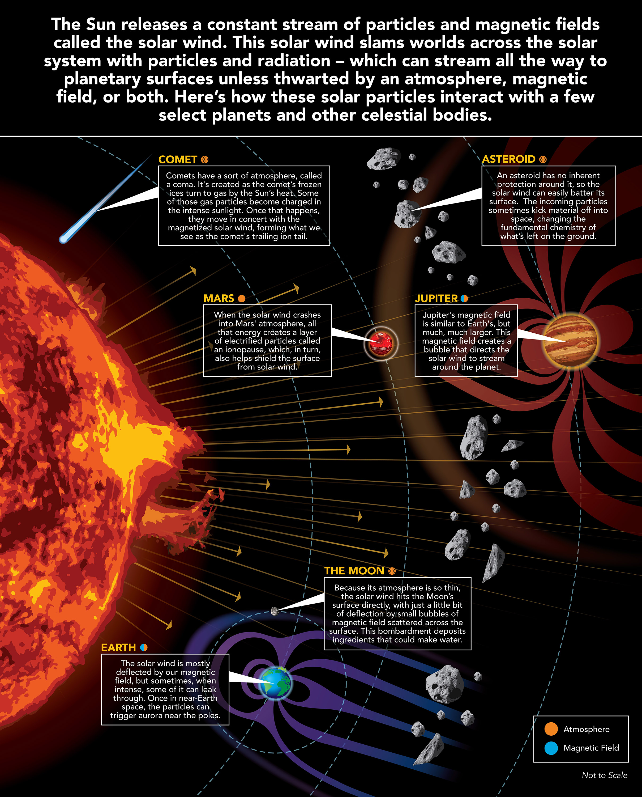

Overview
The Sun is a yellow dwarf star, a hot ball of glowing gases at the heart of our solar system. Its gravity holds the solar system together, keeping everything – from the biggest planets to the smallest particles of debris – in its orbit. The connection and interactions between the Sun and Earth drive the seasons, ocean currents, weather, climate, radiation belts and auroras. Though it is special to us, there are billions of stars like our Sun scattered across the Milky Way galaxy.
The Sun has many names in many cultures. The Latin word for Sun is “sol,” which is the main adjective for all things Sun-related: solar.
Size and Distance
With a radius of 432,168.6 miles (695,508 kilometers), our Sun is not an especially large star—many are several times bigger—but it is still far more massive than our home planet: 332,946 Earths match the mass of the Sun. The Sun’s volume would need 1.3 million Earths to fill it.
The Sun is 93 million miles (150 million kilometers) from Earth. Its nearest stellar neighbor is the Alpha Centauri triple star system: Proxima Centauri is 4.24 light years away, and Alpha Centauri A and B—two stars orbiting each other—are 4.37 light years away. A light year is the distance light travels in one year, which is equal to 5,878,499,810,000 miles or 9,460,528,400,000 kilometers.
Orbit and Rotation
The Sun, and everything that orbits it, is located in the Milky Way galaxy. More specifically, our Sun is in a spiral arm called the Orion Spur that extends outward from the Sagittarius arm. From there, the Sun orbits the center of the Milky Way Galaxy, bringing the planets, asteroids, comets and other objects along with it. Our solar system is moving with an average velocity of 450,000 miles per hour (720,000 kilometers per hour). But even at this speed, it takes us about 230 million years to make one complete orbit around the Milky Way.
The Sun rotates as it orbits the center of the Milky Way. Its spin has an axial tilt of 7.25 degrees with respect to the plane of the planets’ orbits. Since the Sun is not a solid body, different parts of the Sun rotate at different rates. At the equator, the Sun spins around once about every 25 days, but at its poles the Sun rotates once on its axis every 36 Earth days.
Structure
The Sun, like others stars, is a ball of gas. In terms of the number of atoms, it is made of 91.0% hydrogen and 8.9% helium. By mass, the Sun is about 70.6% hydrogen and 27.4% helium.
The Sun has six regions: the core, the radiative zone, and the convective zone in the interior; the visible surface, called the photosphere; the chromosphere; and the outermost region, the corona.
The Sun's enormous mass is held together by gravitational attraction, producing immense pressure and temperature at its core. The Sun has six regions: the core, the radiative zone, and the convective zone in the interior; the visible surface, called the photosphere; the chromosphere; and the outermost region, the corona.
At the core, the temperature is about 27 million degrees Fahrenheit (15 million degrees Celsius), which is sufficient to sustain thermonuclear fusion. This is a process in which atoms combine to form larger atoms and in the process release staggering amounts of energy. Specifically, in the Sun’s core, hydrogen atoms fuse to make helium.
The energy produced in the core powers the Sun and produces all the heat and light the Sun emits. Energy from the core is carried outward by radiation, which bounces around the radiative zone, taking about 170,000 years to get from the core to the top of the convective zone. The temperature drops below 3.5 million degrees Fahrenheit (2 million degrees Celsius) in the convective zone, where large bubbles of hot plasma (a soup of ionized atoms) move upwards. The surface of the Sun—the part we can see—is about 10,000 degrees Fahrenheit (5,500 degrees Celsius). That's much cooler than the blazing core, but it's still hot enough to make carbon, like diamonds and graphite, not just melt, but boil.
